<title>CODA Faculty Partnerships</title>
<meta name="description" content="CODA Music School provides specialized remote music faculty to colleges, universities, and conservatories — backed by five consecutive terms teaching inside California College of Music.">
<style>
  @import url('https://fonts.googleapis.com/css2?family=Fraunces:ital,opsz,wght@0,9..144,300;0,9..144,400;0,9..144,500;0,9..144,600;0,9..144,700;1,9..144,500&family=IBM+Plex+Sans:wght@400;500;600&family=IBM+Plex+Mono:wght@400;500&display=swap');

  :root{
    --paper:#F5F3EE;
    --paper-raised:#EBE6D9;
    --paper-line:#D9D3C3;
    --ink:#18161A;
    --ink-soft:#54524C;
    --ink-faint:#8D8A7F;
    --red:#BD3524;
    --red-deep:#8A2316;
    --red-tint:#EFD8CF;
    --focus:#2563C7;

    --serif:'Fraunces', 'Iowan Old Style', Georgia, serif;
    --sans:'IBM Plex Sans', -apple-system, BlinkMacSystemFont, 'Segoe UI', sans-serif;
    --mono:'IBM Plex Mono', ui-monospace, SFMono-Regular, Menlo, monospace;
  }

  @media (prefers-color-scheme: dark){
    :root:not([data-theme="light"]){
      --paper:#131115;
      --paper-raised:#1D1B1F;
      --paper-line:#322F31;
      --ink:#F1EEE7;
      --ink-soft:#B6B2A8;
      --ink-faint:#747068;
      --red:#E35A45;
      --red-deep:#F2816D;
      --red-tint:#3C241E;
      --focus:#6AA3F5;
    }
  }
  :root[data-theme="dark"]{
    --paper:#131115;
    --paper-raised:#1D1B1F;
    --paper-line:#322F31;
    --ink:#F1EEE7;
    --ink-soft:#B6B2A8;
    --ink-faint:#747068;
    --red:#E35A45;
    --red-deep:#F2816D;
    --red-tint:#3C241E;
    --focus:#6AA3F5;
  }

  *{box-sizing:border-box;}
  html{scroll-behavior:smooth;}
  @media (prefers-reduced-motion: reduce){ html{scroll-behavior:auto;} }

  body{
    margin:0;
    background:var(--paper);
    color:var(--ink);
    font-family:var(--sans);
    font-size:16px;
    line-height:1.6;
    -webkit-font-smoothing:antialiased;
  }

  img{max-width:100%; display:block;}

  .wrap{
    max-width:1180px;
    margin:0 auto;
    padding:0 28px;
  }

  h1,h2,h3{
    font-family:var(--serif);
    font-weight:500;
    letter-spacing:-0.01em;
    text-wrap:balance;
    margin:0;
    color:var(--ink);
  }

  p{margin:0;}

  a{color:inherit;}

  .kicker{
    font-family:var(--mono);
    font-size:12px;
    letter-spacing:0.14em;
    text-transform:uppercase;
    color:var(--red);
    display:flex;
    align-items:center;
    gap:10px;
  }
  .kicker::before{
    content:"";
    width:22px;
    height:1px;
    background:var(--red);
    display:inline-block;
  }

  .measure{ max-width:62ch; }

  /* ---------- Header ---------- */
  header{
    position:sticky;
    top:0;
    z-index:40;
    background:color-mix(in srgb, var(--paper) 92%, transparent);
    backdrop-filter:blur(10px);
    border-bottom:1px solid var(--paper-line);
  }
  .nav-row{
    display:flex;
    align-items:center;
    justify-content:space-between;
    padding:14px 0;
  }
  .brand{
    display:flex;
    align-items:center;
    gap:10px;
    text-decoration:none;
  }
  .brand img{ height:34px; width:auto; }
  .logo-dark{display:none;}
  @media (prefers-color-scheme: dark){
    :root:not([data-theme="light"]) .logo-light{display:none;}
    :root:not([data-theme="light"]) .logo-dark{display:block;}
  }
  :root[data-theme="dark"] .logo-light{display:none;}
  :root[data-theme="dark"] .logo-dark{display:block;}

  .brand-text{
    font-family:var(--mono);
    font-size:11px;
    letter-spacing:0.1em;
    color:var(--ink-faint);
    border-left:1px solid var(--paper-line);
    padding-left:10px;
    line-height:1.3;
    max-width:150px;
  }

  nav.primary{
    display:flex;
    align-items:center;
    gap:30px;
  }
  nav.primary a{
    font-size:14px;
    text-decoration:none;
    color:var(--ink-soft);
    position:relative;
    padding:2px 0;
  }
  nav.primary a:hover{ color:var(--ink); }
  nav.primary a::after{
    content:"";
    position:absolute;
    left:0; right:100%;
    bottom:-2px;
    height:1px;
    background:var(--red);
    transition:right .22s ease;
  }
  nav.primary a:hover::after{ right:0; }

  .cta{
    font-family:var(--sans);
    font-weight:600;
    font-size:13.5px;
    letter-spacing:0.01em;
    text-decoration:none;
    color:var(--paper);
    background:var(--ink);
    padding:11px 20px;
    border:1px solid var(--ink);
    white-space:nowrap;
    transition:background .18s ease, color .18s ease, border-color .18s ease;
  }
  .cta:hover{ background:var(--red); border-color:var(--red); }
  .cta.ghost{
    background:transparent;
    color:var(--ink);
  }
  .cta.ghost:hover{ color:var(--red); background:transparent; border-color:var(--red); }

  .nav-toggle{
    display:none;
    background:none;
    border:1px solid var(--paper-line);
    color:var(--ink);
    font-family:var(--mono);
    font-size:12px;
    padding:8px 12px;
    cursor:pointer;
  }

  [hidden]{ display:none !important; }
  #mobileNav{
    display:flex;
    flex-direction:column;
    gap:14px;
    padding-bottom:16px;
  }
  #mobileNav a{
    text-decoration:none;
    color:var(--ink-soft);
    font-size:15px;
  }

  button:focus-visible, a:focus-visible, input:focus-visible, textarea:focus-visible{
    outline:2px solid var(--focus);
    outline-offset:2px;
  }

  /* ---------- Hero ---------- */
  .hero{
    padding:86px 0 56px;
    border-bottom:1px solid var(--paper-line);
  }
  .hero-grid{
    display:grid;
    grid-template-columns:1.25fr 0.75fr;
    gap:60px;
    align-items:end;
  }
  .hero h1{
    font-size:clamp(34px, 4.6vw, 56px);
    line-height:1.08;
    margin:18px 0 20px;
  }
  .hero h1 em{
    font-style:italic;
    color:var(--red);
  }
  .hero-sub{
    font-size:17px;
    color:var(--ink-soft);
    max-width:46ch;
  }
  .hero-ctas{
    display:flex;
    gap:14px;
    margin-top:30px;
    flex-wrap:wrap;
  }
  .hero-aside{
    border-left:1px solid var(--paper-line);
    padding-left:28px;
  }
  .hero-aside p{
    font-size:14.5px;
    color:var(--ink-soft);
    margin-bottom:18px;
  }

  .waveline{
    width:100%;
    height:40px;
    margin-top:36px;
  }
  .waveline path{
    fill:none;
    stroke:var(--red);
    stroke-width:1.4;
    stroke-linecap:round;
    stroke-dasharray:600;
    stroke-dashoffset:600;
    animation:draw 1.6s ease forwards .2s;
  }
  @media (prefers-reduced-motion: reduce){
    .waveline path{ animation:none; stroke-dashoffset:0; }
  }
  @keyframes draw{ to{ stroke-dashoffset:0; } }

  /* ---------- Stat ledger ---------- */
  .ledger{
    border-top:1px solid var(--paper-line);
    border-bottom:1px solid var(--paper-line);
  }
  .ledger .wrap{
    display:grid;
    grid-template-columns:repeat(4,1fr);
  }
  .ledger-item{
    padding:26px 24px;
    border-left:1px solid var(--paper-line);
  }
  .ledger-item:first-child{ border-left:none; padding-left:0; }
  .ledger-label{
    font-family:var(--mono);
    font-size:11px;
    letter-spacing:0.08em;
    text-transform:uppercase;
    color:var(--ink-faint);
    margin-bottom:8px;
  }
  .ledger-value{
    font-family:var(--serif);
    font-size:20px;
    line-height:1.3;
  }
  .ledger-value span{ color:var(--red); }

  /* ---------- Sections ---------- */
  section.block{
    padding:84px 0;
    border-bottom:1px solid var(--paper-line);
  }
  .block-head{
    display:grid;
    grid-template-columns:0.85fr 1.15fr;
    gap:60px;
    margin-bottom:44px;
  }
  .block-head h2{
    font-size:clamp(26px, 3vw, 36px);
    line-height:1.18;
    margin-top:14px;
  }
  .block-head .lede{
    font-size:16px;
    color:var(--ink-soft);
    padding-top:6px;
  }

  .fade-up{
    opacity:0;
    transform:translateY(16px);
    transition:opacity .6s ease, transform .6s ease;
  }
  .fade-up.in-view{ opacity:1; transform:none; }
  @media (prefers-reduced-motion: reduce){
    .fade-up{ opacity:1; transform:none; transition:none; }
  }

  /* About facts */
  .facts{
    display:grid;
    grid-template-columns:repeat(2, 1fr);
    gap:18px 40px;
    margin-top:30px;
  }
  .fact dt{
    font-family:var(--mono);
    font-size:11px;
    letter-spacing:0.08em;
    text-transform:uppercase;
    color:var(--ink-faint);
    margin-bottom:4px;
  }
  .fact dd{ margin:0; font-size:15.5px; }

  /* CCM panel */
  .panel{
    background:var(--paper-raised);
    border:1px solid var(--paper-line);
    border-left:3px solid var(--red);
    padding:40px 44px;
  }
  .panel-grid{
    display:grid;
    grid-template-columns:1.3fr 1fr;
    gap:44px;
  }
  .panel blockquote{
    margin:0 0 24px;
    font-family:var(--serif);
    font-size:19px;
    line-height:1.5;
    font-weight:400;
  }
  .panel-facts{
    display:flex;
    flex-direction:column;
    gap:16px;
  }
  .panel-facts .fact dd{ font-size:15px; }
  .disclaimer{
    font-size:12.5px;
    color:var(--ink-faint);
    margin-top:26px;
    padding-top:18px;
    border-top:1px solid var(--paper-line);
    max-width:70ch;
  }

  /* Berklee */
  .berklee-row{
    display:grid;
    grid-template-columns:1fr 1fr;
    gap:48px;
    align-items:start;
  }
  .berklee-row p + p{ margin-top:16px; }
  .credential{
    border:1px solid var(--paper-line);
    padding:26px;
    font-family:var(--mono);
    font-size:13px;
    color:var(--ink-soft);
    line-height:1.7;
  }
  .credential strong{
    display:block;
    font-family:var(--serif);
    font-size:17px;
    color:var(--ink);
    font-weight:500;
    margin-bottom:10px;
  }

  /* Services */
  .services{
    display:grid;
    grid-template-columns:repeat(2, 1fr);
    gap:1px;
    background:var(--paper-line);
    border:1px solid var(--paper-line);
  }
  .service{
    background:var(--paper);
    padding:32px;
  }
  .service .letter{
    font-family:var(--mono);
    font-size:13px;
    color:var(--red);
  }
  .service h3{
    font-size:21px;
    font-weight:500;
    margin:10px 0 10px;
  }
  .service p{
    font-size:14.5px;
    color:var(--ink-soft);
  }

  /* Expertise */
  .expertise-grid{
    display:grid;
    grid-template-columns:repeat(4, 1fr);
    border-top:1px solid var(--paper-line);
    border-left:1px solid var(--paper-line);
  }
  .expertise-item{
    border-right:1px solid var(--paper-line);
    border-bottom:1px solid var(--paper-line);
    padding:20px 18px;
    font-size:14.5px;
  }
  .expertise-item span{
    display:block;
    font-family:var(--mono);
    font-size:10.5px;
    color:var(--ink-faint);
    margin-bottom:6px;
  }

  /* Process */
  .process{
    display:grid;
    grid-template-columns:repeat(4, 1fr);
    gap:36px;
  }
  .step .num{
    font-family:var(--serif);
    font-style:italic;
    font-size:30px;
    color:var(--red);
    margin-bottom:10px;
  }
  .step h3{
    font-size:16.5px;
    font-weight:600;
    font-family:var(--sans);
    margin-bottom:8px;
  }
  .step p{ font-size:14px; color:var(--ink-soft); }

  /* Founder */
  .founder-row{
    display:grid;
    grid-template-columns:0.9fr 1.3fr;
    gap:54px;
    align-items:start;
  }
  .monogram{
    aspect-ratio:1;
    border:1px solid var(--paper-line);
    display:flex;
    align-items:center;
    justify-content:center;
    font-family:var(--serif);
    font-style:italic;
    font-size:64px;
    color:var(--ink-faint);
    background:var(--paper-raised);
  }
  .founder-note{
    font-size:13px;
    color:var(--ink-faint);
    margin-top:16px;
  }
  .founder-cred{
    font-family:var(--mono);
    font-size:12.5px;
    color:var(--red);
    text-transform:uppercase;
    letter-spacing:0.07em;
    margin-bottom:10px;
  }
  .founder-row p + p{ margin-top:14px; }

  /* Contact */
  .contact-grid{
    display:grid;
    grid-template-columns:0.8fr 1.2fr;
    gap:60px;
  }
  .contact-info p{ font-size:15px; color:var(--ink-soft); margin-top:14px; }
  .contact-info a.email{
    display:inline-block;
    margin-top:22px;
    font-family:var(--mono);
    font-size:14px;
    color:var(--red);
    text-decoration:none;
    border-bottom:1px solid var(--red);
  }

  form{ display:flex; flex-direction:column; gap:18px; }
  .form-row{ display:grid; grid-template-columns:1fr 1fr; gap:18px; }
  label{
    display:block;
    font-family:var(--mono);
    font-size:11px;
    letter-spacing:0.07em;
    text-transform:uppercase;
    color:var(--ink-faint);
    margin-bottom:7px;
  }
  input, textarea, select{
    width:100%;
    background:var(--paper-raised);
    border:1px solid var(--paper-line);
    color:var(--ink);
    font-family:var(--sans);
    font-size:14.5px;
    padding:11px 13px;
  }
  textarea{ resize:vertical; min-height:80px; }
  .field{ display:flex; flex-direction:column; }
  .submit-row{
    display:flex;
    align-items:center;
    gap:18px;
    margin-top:6px;
  }
  .submit-row .note{ font-size:12.5px; color:var(--ink-faint); }
  button.cta{ border:1px solid var(--ink); cursor:pointer; font-size:14px; }

  /* Footer */
  footer{ padding:50px 0 60px; }
  .footer-row{
    display:flex;
    justify-content:space-between;
    align-items:flex-start;
    gap:40px;
    flex-wrap:wrap;
  }
  .footer-brand{ display:flex; align-items:center; gap:10px; }
  .footer-brand img{ height:26px; }
  footer p{ color:var(--ink-faint); font-size:12.5px; max-width:60ch; line-height:1.7; }
  footer .legal{ margin-top:22px; }
  footer .meta{
    font-family:var(--mono);
    font-size:11.5px;
    color:var(--ink-faint);
    margin-top:18px;
  }

  /* ---------- Responsive ---------- */
  @media (max-width: 920px){
    nav.primary{ display:none; }
    .nav-toggle{ display:block; }
    .hero-grid, .block-head, .panel-grid, .berklee-row, .founder-row, .contact-grid{
      grid-template-columns:1fr;
    }
    .hero-aside{ border-left:none; padding-left:0; border-top:1px solid var(--paper-line); padding-top:24px; }
    .ledger .wrap{ grid-template-columns:repeat(2,1fr); }
    .ledger-item:nth-child(2){ border-left:1px solid var(--paper-line); }
    .ledger-item:nth-child(odd){ border-left:none; padding-left:0; }
    .services{ grid-template-columns:1fr; }
    .expertise-grid{ grid-template-columns:repeat(2,1fr); }
    .process{ grid-template-columns:repeat(2,1fr); }
    .form-row{ grid-template-columns:1fr; }
    .footer-row{ flex-direction:column; }
  }
  @media (max-width: 560px){
    .expertise-grid{ grid-template-columns:1fr 1fr; }
    .wrap{ padding:0 20px; }
    .hero{ padding:60px 0 40px; }
    section.block{ padding:56px 0; }
  }
</style>

<header>
  <div class="wrap nav-row">
    <a class="brand" href="#top">
      
      
      <span class="brand-text">INTERNATIONAL FACULTY &amp; ACADEMIC OUTSOURCING</span>
    </a>
    <nav class="primary">
      <a href="#about">About</a>
      <a href="#ccm">CCM Experience</a>
      <a href="#services">Services</a>
      <a href="#faculty">Faculty</a>
      <a class="cta" href="#contact">Start a Conversation</a>
    </nav>
    <button class="nav-toggle" id="navToggle" aria-expanded="false" aria-controls="mobileNav">MENU</button>
  </div>
  <div class="wrap" id="mobileNav" hidden>
    <a href="#about">About</a>
    <a href="#ccm">CCM Experience</a>
    <a href="#services">Services</a>
    <a href="#faculty">Faculty</a>
    <a href="#contact">Contact</a>
  </div>
</header>

<main id="top">

  <section class="hero">
    <div class="wrap hero-grid">
      <div>
        <p class="kicker">Academic Outsourcing · Remote Faculty Partnerships</p>
        <h1>Exceptional music faculty.<br>Without the <em>hiring complexity</em>.</h1>
        <p class="hero-sub">CODA Music School places experienced, specialized music educators inside college and university programs — fully aligned to your curriculum, calendar, and academic standards. Backed by real experience teaching inside U.S. higher music education.</p>
        <div class="hero-ctas">
          <a class="cta" href="#contact">Explore a Faculty Partnership</a>
          <a class="cta ghost" href="#faculty">Meet Our Faculty</a>
        </div>
        <svg class="waveline" viewBox="0 0 560 40" preserveAspectRatio="none" aria-hidden="true">
          <path d="M0 20 L40 20 L54 6 L68 34 L82 12 L96 28 L110 20 L160 20 L174 2 L188 36 L202 10 L216 30 L230 20 L300 20 L314 8 L328 32 L342 14 L356 26 L370 20 L440 20 L454 4 L468 34 L482 12 L496 28 L510 20 L560 20"/>
        </svg>
      </div>
      <div class="hero-aside">
        <p>CODA instructors have taught remotely inside California College of Music across five consecutive academic terms — contributing to songwriting, production, and artist development coursework for a U.S. institution.</p>
        <p>This page introduces that experience to academic deans, program directors, and department chairs considering remote or hybrid faculty support.</p>
      </div>
    </div>
  </section>

  <section class="ledger">
    <div class="wrap">
      <div class="ledger-item">
        <div class="ledger-label">Headquarters</div>
        <div class="ledger-value">Mexico City, <span>Mexico</span></div>
      </div>
      <div class="ledger-item">
        <div class="ledger-label">Founder &amp; Director</div>
        <div class="ledger-value">José Laín — <span>Berklee</span>, Boston</div>
      </div>
      <div class="ledger-item">
        <div class="ledger-label">Instructor Network</div>
        <div class="ledger-value">~<span>20</span> music educators</div>
      </div>
      <div class="ledger-item">
        <div class="ledger-label">U.S. Collaboration</div>
        <div class="ledger-value"><span>5</span> consecutive terms, CCM</div>
      </div>
    </div>
  </section>

  <section class="block fade-up" id="about">
    <div class="wrap">
      <div class="block-head">
        <p class="kicker">§01 — Who We Are</p>
        <div>
          <h2>An established music education institution, built for international collaboration.</h2>
        </div>
      </div>
      <p class="measure" style="font-size:16px; color:var(--ink-soft);">
        CODA Music School is a contemporary music education institution headquartered in Mexico City, founded and directed by José Laín — composer, producer, and graduate of Berklee College of Music in Boston. CODA runs its own in-person and online programs year-round, and separately from its institutional partnerships, has taught more than 120 private students through that operation. Its instructor network spans performance, composition, songwriting, music production, and music technology.
      </p>
      <dl class="facts">
        <div class="fact"><dt>Modalities</dt><dd>In-person &amp; online instruction</dd></div>
        <div class="fact"><dt>Specialization</dt><dd>Contemporary performance, composition &amp; production</dd></div>
        <div class="fact"><dt>Own student base</dt><dd>120+ private students (separate from institutional partners)</dd></div>
        <div class="fact"><dt>Institutional experience</dt><dd>Remote faculty for a U.S. music college since its collaboration with CCM began</dd></div>
      </dl>
    </div>
  </section>

  <section class="block fade-up" id="ccm">
    <div class="wrap">
      <p class="kicker">§02 — Proven In U.S. Higher Education</p>
      <h2 style="margin:14px 0 30px; max-width:16ch;">Our Experience with California College of Music</h2>
      <div class="panel">
        <div class="panel-grid">
          <div>
            <blockquote>“CODA Music School has collaborated with California College of Music in the Los Angeles area, providing specialized remote faculty for contemporary music education. Across five consecutive academic terms, CODA instructors have contributed to courses in songwriting, lyric writing, music production, and artist development.”</blockquote>
            <p style="font-size:13.5px; color:var(--ink-faint);">— CODA Music School, describing its own faculty engagement</p>
          </div>
          <div class="panel-facts">
            <div class="fact"><dt>Partner institution</dt><dd>California College of Music, Los Angeles area</dd></div>
            <div class="fact"><dt>Engagement length</dt><dd>5 consecutive academic terms</dd></div>
            <div class="fact"><dt>CODA faculty deployed</dt><dd>José Laín + 4 instructors</dd></div>
            <div class="fact"><dt>Course areas</dt><dd>Songwriting, lyric writing, music production, artist development</dd></div>
            <div class="fact"><dt>Delivery model</dt><dd>Fully remote, integrated into CCM's existing academic offering</dd></div>
          </div>
        </div>
        <p class="disclaimer">CODA Music School and California College of Music (ccmla.edu) are independent institutions that have collaborated academically; this page reflects CODA's own account of that collaboration and does not imply an active or ongoing engagement for a specific future term. References here are not an endorsement by California College of Music.</p>
      </div>
    </div>
  </section>

  <section class="block fade-up">
    <div class="wrap">
      <p class="kicker">§03 — Faculty Trained At The Source</p>
      <h2 style="margin:14px 0 36px; max-width:18ch;">The Berklee Connection</h2>
      <div class="berklee-row">
        <div>
          <p style="font-size:16px; color:var(--ink-soft);">José Laín studied at Berklee College of Music in Boston from 2011 to 2015, with a dual concentration in Contemporary Writing &amp; Production and Songwriting. That training — rigorous, performance-driven, and built around the professional music industry — shapes how CODA selects and prepares the instructors it places with partner institutions.</p>
          <p style="font-size:16px; color:var(--ink-soft);">Several members of CODA's instructor network trained at Berklee and other respected contemporary music programs, pairing formal music education with active careers in performance, composition, and production.</p>
        </div>
        <div class="credential">
          <strong>José Laín</strong>
          Berklee College of Music, Boston<br>
          B.A., Contemporary Writing &amp; Production<br>
          B.A., Songwriting<br>
          2011 – 2015
          <br><br>
          Founder &amp; Academic Director, CODA Music School. Composer and producer with music placed in international audiovisual productions.
        </div>
      </div>
      <p class="disclaimer" style="max-width:90ch;">Berklee College of Music is not affiliated with, and does not endorse, CODA Music School. This connection reflects the individual academic training of CODA's founder and instructors.</p>
    </div>
  </section>

  <section class="block fade-up" id="services">
    <div class="wrap">
      <div class="block-head">
        <p class="kicker">§04 — How Institutions Work With Us</p>
        <div>
          <h2>Faculty solutions built around your program.</h2>
          <p class="lede">Four ways institutions typically engage CODA — scoped to your courses, calendar, and staffing needs through a personalized proposal.</p>
        </div>
      </div>
      <div class="services">
        <div class="service">
          <div class="letter">A</div>
          <h3>Remote Faculty Partnerships</h3>
          <p>Our core service. Specialized CODA instructors teach your students remotely, integrated into your program under your academic calendar and standards — the same model used across our collaboration with California College of Music.</p>
        </div>
        <div class="service">
          <div class="letter">B</div>
          <h3>Faculty Augmentation</h3>
          <p>Temporary or recurring support for an existing department — covering specific courses, absorbing enrollment growth, or adding a specialty your current faculty doesn't offer.</p>
        </div>
        <div class="service">
          <div class="letter">C</div>
          <h3>Curriculum &amp; Specialized Courses</h3>
          <p>Collaboration on contemporary songwriting, music production, and creative-project coursework. Scope and deliverables are evaluated per engagement, not offered as a fixed package.</p>
        </div>
        <div class="service">
          <div class="letter">D</div>
          <h3>Online &amp; Hybrid Education Support</h3>
          <p>Faculty who integrate into distance or hybrid programs on your terms — your institution sets the academic objectives; CODA supplies the specialized teaching talent.</p>
        </div>
      </div>
    </div>
  </section>

  <section class="block fade-up">
    <div class="wrap">
      <p class="kicker">§05 — Disciplines</p>
      <h2 style="margin:14px 0 30px;">Areas of Expertise</h2>
      <div class="expertise-grid">
        <div class="expertise-item"><span>01</span>Songwriting</div>
        <div class="expertise-item"><span>02</span>Composition</div>
        <div class="expertise-item"><span>03</span>Music Production</div>
        <div class="expertise-item"><span>04</span>Music Theory</div>
        <div class="expertise-item"><span>05</span>Ear Training</div>
        <div class="expertise-item"><span>06</span>Keyboard Techniques</div>
        <div class="expertise-item"><span>07</span>Instrumental Performance</div>
        <div class="expertise-item"><span>08</span>Arranging</div>
        <div class="expertise-item"><span>09</span>Music Technology</div>
        <div class="expertise-item"><span>10</span>Lyric Writing</div>
      </div>
    </div>
  </section>

  <section class="block fade-up">
    <div class="wrap">
      <p class="kicker">§06 — Process</p>
      <h2 style="margin:14px 0 40px;">How We Work</h2>
      <div class="process">
        <div class="step">
          <div class="num">1</div>
          <h3>Tell us what your program needs</h3>
          <p>Share the courses, specialties, or staffing gap you're working to fill.</p>
        </div>
        <div class="step">
          <div class="num">2</div>
          <h3>We match you with qualified faculty</h3>
          <p>We propose instructors from our network whose background fits your program.</p>
        </div>
        <div class="step">
          <div class="num">3</div>
          <h3>We align with your curriculum</h3>
          <p>Course content, calendar, and academic standards are set by your institution.</p>
        </div>
        <div class="step">
          <div class="num">4</div>
          <h3>Your students learn with our instructors</h3>
          <p>Classes run remotely, integrated into your existing academic structure.</p>
        </div>
      </div>
    </div>
  </section>

  <section class="block fade-up" id="faculty">
    <div class="wrap">
      <p class="kicker">§07 — Leadership</p>
      <h2 style="margin:14px 0 36px;">Meet Our Founder</h2>
      <div class="founder-row">
        <div>
          <div class="monogram" aria-hidden="true">JL</div>
          <p class="founder-note">Faculty portraits and full instructor profiles will be added here as our partnership roster expands. Complete faculty bios are available on request during a partnership conversation.</p>
        </div>
        <div>
          <p class="founder-cred">Founder &amp; Academic Director</p>
          <p style="font-size:16.5px;">José Laín is a musician, composer, producer, and academic director. He studied at Berklee College of Music in Boston from 2011 to 2015, completing a dual concentration in Contemporary Writing &amp; Production and Songwriting.</p>
          <p style="font-size:16.5px;">Beyond directing CODA Music School, José has taught university-level coursework in composition, production, orchestration, sound design, and collaborative music projects — including CODA's remote faculty engagement with California College of Music. His work as a composer and producer has placed music in international audiovisual productions.</p>
          <p style="font-size:16.5px;">He leads CODA's instructor network and personally oversees faculty matching for every institutional partnership.</p>
        </div>
      </div>
    </div>
  </section>

  <section class="block fade-up" id="contact" style="border-bottom:none;">
    <div class="wrap">
      <div class="contact-grid">
        <div class="contact-info">
          <p class="kicker">§08 — Next Steps</p>
          <h2 style="margin:14px 0 0; max-width:14ch;">Let's build your next academic partnership.</h2>
          <p>Tell us about your program and the courses or faculty you're looking to support. We'll follow up to discuss fit, scope, and next steps — no obligation.</p>
          <a class="email" href="mailto:coda.ms.mexico@gmail.com">coda.ms.mexico@gmail.com</a>
        </div>
        <form id="partnerForm">
          <div class="form-row">
            <div class="field">
              <label for="f-name">Name</label>
              <input id="f-name" name="name" type="text" required>
            </div>
            <div class="field">
              <label for="f-institution">Institution</label>
              <input id="f-institution" name="institution" type="text" required>
            </div>
          </div>
          <div class="form-row">
            <div class="field">
              <label for="f-position">Position</label>
              <input id="f-position" name="position" type="text">
            </div>
            <div class="field">
              <label for="f-email">Email</label>
              <input id="f-email" name="email" type="email" required>
            </div>
          </div>
          <div class="field">
            <label for="f-needs">Courses or Faculty Needed</label>
            <textarea id="f-needs" name="needs" rows="3"></textarea>
          </div>
          <div class="form-row">
            <div class="field">
              <label for="f-classes">Estimated Number of Classes</label>
              <input id="f-classes" name="classes" type="text" placeholder="e.g., 2 courses, Spring term">
            </div>
            <div class="field">
              <label for="f-timeline">Target Start</label>
              <input id="f-timeline" name="timeline" type="text" placeholder="e.g., Fall 2027">
            </div>
          </div>
          <div class="field">
            <label for="f-more">Additional Information</label>
            <textarea id="f-more" name="more" rows="3"></textarea>
          </div>
          <div class="submit-row">
            <button class="cta" type="submit">Let's Discuss Your Faculty Needs</button>
            <span class="note">Opens your email client, addressed to CODA Music School.</span>
          </div>
        </form>
      </div>
    </div>
  </section>

</main>

<footer>
  <div class="wrap">
    <div class="footer-row">
      <div>
        <div class="footer-brand">
          
          
        </div>
        <p class="legal">CODA Music School is an independent music education institution based in Mexico City, Mexico. CODA and California College of Music are independent institutions that have collaborated academically; CODA is not accredited as a university. Berklee College of Music is not affiliated with, and does not endorse, CODA Music School.</p>
        <p class="meta">Mexico City, Mexico · coda.ms.mexico@gmail.com · © <span id="year"></span> CODA Music School</p>
      </div>
    </div>
  </div>
</footer>

<script>
  (function(){
    var toggle = document.getElementById('navToggle');
    var mobileNav = document.getElementById('mobileNav');
    toggle.addEventListener('click', function(){
      var open = !mobileNav.hidden;
      mobileNav.hidden = open;
      toggle.setAttribute('aria-expanded', String(!open));
    });
    mobileNav.querySelectorAll('a').forEach(function(a){
      a.addEventListener('click', function(){ mobileNav.hidden = true; toggle.setAttribute('aria-expanded','false'); });
    });

    document.getElementById('year').textContent = new Date().getFullYear();

    var prefersReduced = window.matchMedia('(prefers-reduced-motion: reduce)').matches;
    if(!prefersReduced && 'IntersectionObserver' in window){
      var obs = new IntersectionObserver(function(entries){
        entries.forEach(function(entry){
          if(entry.isIntersecting){
            entry.target.classList.add('in-view');
            obs.unobserve(entry.target);
          }
        });
      }, { threshold: 0.12 });
      document.querySelectorAll('.fade-up').forEach(function(el){ obs.observe(el); });
    } else {
      document.querySelectorAll('.fade-up').forEach(function(el){ el.classList.add('in-view'); });
    }

    var form = document.getElementById('partnerForm');
    form.addEventListener('submit', function(e){
      e.preventDefault();
      var d = Object.fromEntries(new FormData(form).entries());
      var subject = 'Faculty Partnership Inquiry — ' + (d.institution || 'New Institution');
      var bodyLines = [
        'Name: ' + (d.name || ''),
        'Institution: ' + (d.institution || ''),
        'Position: ' + (d.position || ''),
        'Email: ' + (d.email || ''),
        '',
        'Courses or Faculty Needed:',
        d.needs || '',
        '',
        'Estimated Number of Classes: ' + (d.classes || ''),
        'Target Start: ' + (d.timeline || ''),
        '',
        'Additional Information:',
        d.more || ''
      ];
      var mailto = 'mailto:coda.ms.mexico@gmail.com?subject=' + encodeURIComponent(subject) + '&body=' + encodeURIComponent(bodyLines.join('\n'));
      window.location.href = mailto;
    });
  })();
</script>
